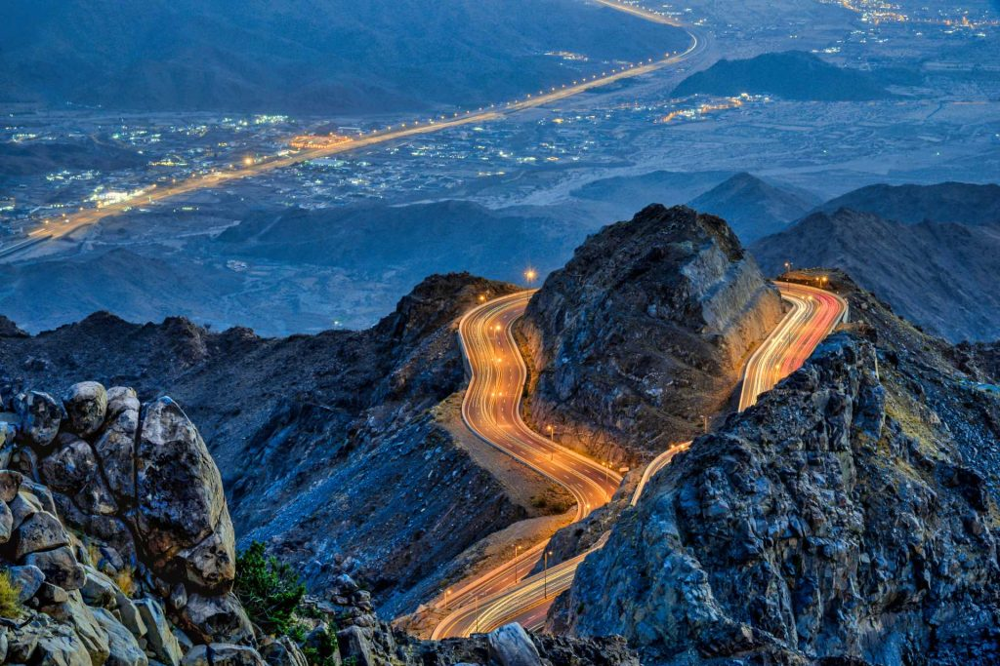

الطائف هي مدينة سعودية تقع في الغرب من المملكة العربية السعودية تابعة لـمنطقة مكة المكرمة على جانبي وادي «وج»، وتبعد عن مدينة مكة المكرمة 75 كم تقريباً وتحيط بها الجبال من جميع الجهات، وترتفع عن سطح البحر بمسافة تتدرج ما بين 1700 م إلى 2500 م.مما أكسبها جواً لطيفاً، ومصيفاً قديماً للأهالي وللمدن الحجازية السعودية القريبة كمكة المكرمة وجدة، وقد أكسبها الموقع مميزات عدة.
مدينة الطائف

 جميع الحقوق محفوظة-السعودية بعيون تقنية 2026
جميع الحقوق محفوظة-السعودية بعيون تقنية 2026